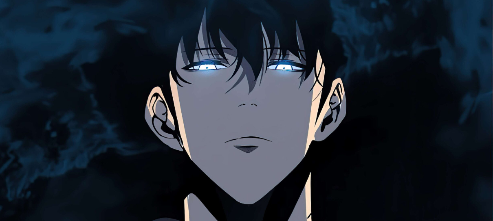
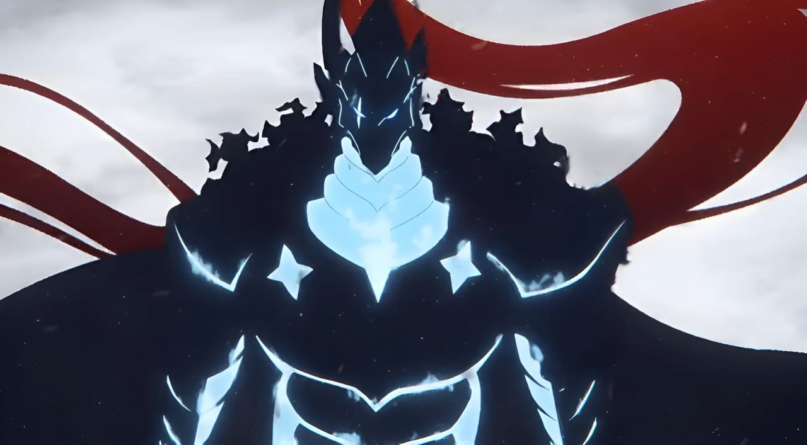
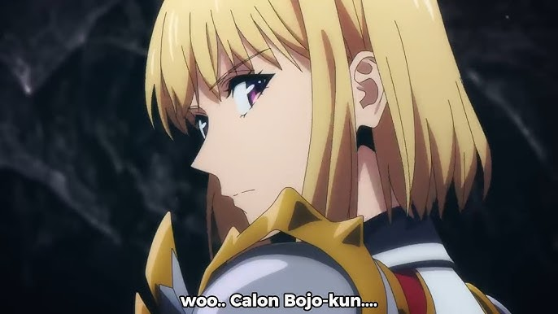

Sung Jin-Woo é o protagonista de Solo Leveling. Ele começa como o caçador mais fraco do mundo, mas após um evento em uma masmorra, ganha a habilidade de se tornar mais forte sem limites. Com o tempo, se torna o Monarca das Sombras, o caçador mais poderoso, e luta para proteger sua família e a humanidade.
Igris é uma sombra leal de Sung Jin-Woo em Solo Leveling. Ele foi originalmente um poderoso cavaleiro vermelho, guardião do Castelo dos Cavaleiros. Após ser derrotado por Jin-Woo, foi revivido como uma sombra e se tornou um dos seus mais fiéis e fortes subordinados, conhecido por sua honra, força e lealdade.
Cha Hae-In é uma caçadora de Rank S em Solo Leveling e a única mulher nesse nível na Coreia. Ela é forte, séria e dedicada, mas tem dificuldades de se aproximar das pessoas por causa de sua habilidade sensitiva ao cheiro dos outros caçadores — com exceção de Sung Jin-Woo, por quem desenvolve sentimentos. Mais tarde, ela se torna sua esposa.
